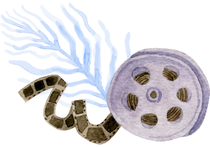
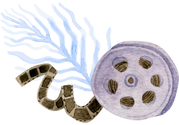

Olá, querido estudante. Seja bem-vindo!
Seguimos em nossa jornada de reconhecimento das múltiplas expressões da cultura e do seu papel no desenvolvimento econômico e social!
Neste módulo da primeira etapa da Qualificação Profissional de Produtor Cultural, vamos “mergulhar” fundo para compreender as relações entre cultura e economia!
Vamos lá?
Bons estudos!
Chegamos ao terceiro módulo desta unidade curricular. Até aqui estudamos conceitos-base que abrangem as dimensões simbólicas e cidadãs da cultura, entendendo como a cultura nos atravessa em sociedade.
Assista ao vídeo para relembrar.
Nos módulos anteriores, abordamos que a função da produção cultural é elaborar, planejar e realizar projetos artísticos e culturais, encarregando-se de inúmeras demandas legais e operacionais, além de ter conhecimento e relacionar-se com os saberes/fazeres culturais e artísticos (locais, regionais, nacionais e internacionais).
Também estudamos que a cultura é um conjunto de características compartilhadas pela sociedade, por grupos sociais etc., e que ela se expressa nas identidades culturais distintas, de diferentes grupos sociais, sendo marcada pela multiplicidade, pelas aproximações, pelas trocas, pela pluralidade e pela diversidade cultural, caracterizando, assim, a interculturalidade. Esta, por sua vez, ocorre em lugares de respeito mútuo – equânimes, sendo tanto nas construções identitárias, interculturais, quanto nas expressões artísticas, os motores que impulsionam e consolidam a diversidade cultural.
Foram apresentados vários exemplos de produções culturais da diversidade cultural brasileira e você foi desafiado a pesquisar mais sobre produções que estão em sua comunidade, sua região, sua casa, com seus amigos.
Também abordamos a perspectiva do entendimento de que ninguém está fora da cultura e de que ela é essencial para o exercício da cidadania – a construção de uma democracia cultural. Além disso, afirmou-se que a defesa das identidades culturais (negros, indígenas, mulheres, LGBTQIA+, pessoas com deficiência etc.) corresponde diretamente ao respeito à democracia e à cidadania cultural.
Lembrou? Então siga a leitura do módulo para entender mais sobre a relação entre economia e cultura!
Bons estudos!
Agora é hora de dar um “mergulho” ainda mais fundo! Depois de relembrar os módulos anteriores, vamos explorar como os fazedores de arte e cultura estão trilhando caminhos em direção à sustentabilidade e ao impacto econômico das atividades culturais. E, acredite, essa “pegada” não “rola” só no setor cultural, não! Acontece também na economia, gerando empregos, renda etc.
Venha conosco descobrir mais!
[...] falar de desenvolvimento como reencontro com o gênio criativo de nossa cultura
e como
realização das potencialidades humanas pode parecer simples fuga na utopia. Mas que
é a
utopia senão o fruto da percepção de dimensões secretas da realidade, um afloramento
de
energias contidas que antecipa a ampliação do horizonte de possibilidades aberto ao
homem?
(Furtado, 2012, p. 33)
Essa citação é do economista e diplomata brasileiro Celso Furtado, que, ao longo de sua vida, pensou muito sobre economia, cultura e desenvolvimento. Normalmente, fala-se de utopia como se fosse uma ilusão, algo inatingível, mas a frase do autor ajuda a pensar a utopia como uma perspectiva real, um outro lugar no qual é sim possível chegar, desde que se aprenda a percorrer o caminho.
Neste momento, você está avançando para uma espécie de “encontro das águas”, e quem já viu o encontro entre dois rios ou o encontro do rio com o mar sabe que nem sempre eles são calmos. Porém, avance água adentro, tendo a utopia de Celso Furtado como guia, mais precisamente no que se refere ao “desenvolvimento como reencontro com o gênio criativo de nossa cultura e como realização das potencialidades humanas”.
Para fazer esse avanço, é preciso falar sobre economia, mas não a economia do banco ou da bolsa de valores, embora, quando se fale sobre economia, essas definições estejam sempre interligadas. O foco agora estará nas relações entre a cultura e a economia.
É necessário compreender a cultura em sua diversidade, e não como algo que está distante de nós. Todo mundo faz parte da cultura, todo mundo é inventor de culturas, mas isso não significa que todo mundo vivencia e produz as mesmas manifestações culturais.
Por outro lado, a mesma pessoa que produz e expressa sua cultura utiliza ônibus, compra uma camiseta, trabalha, paga um boleto, guarda um dinheiro na poupança, entra no cheque especial, vai ao cinema, come uma pizza, um cachorro-quente (com ou sem purê?), um espetinho, um tacacá, um pastel, uma tapioca... Ou seja, essa pessoa participa da economia.
Mas veja bem: não é possível alguém fazer tudo de uma vez, não é mesmo? Também não podemos achar um lugar que venda pizza e espetinho ao mesmo tempo. Além disso, precisamos de dinheiro e tempo para tudo isso, ou seja, precisamos escolher o que fazer e como gastar nosso tempo e nosso dinheiro, escolhendo em quais atividades ou produtos devemos investir nossos recursos.
E veja que interessante: isso vale para empresas e até para o governo. Assim como você decide se come fora ou se vai ao teatro, as empresas também escolhem onde investir seus recursos, considerando seu planejamento, os custos e a expectativa de retorno em cada situação. E o governo também tem de escolher onde colocar o dinheiro público, seguindo as leis e pensando no que é melhor para a sociedade.
É importante destacar que as escolhas que as pessoas fazem com relação aos recursos em seus lares são muito diferentes das escolhas feitas por uma empresa, assim como das escolhas feitas pelas organizações do Estado. No entanto, as escolhas feitas por indivíduos, empresas e Estado relacionam-se, influenciando-se mutuamente.
Considere, como exemplo, a Lei Aldir Blanc, citada no módulo II como meio de fomento para a realização de inúmeros projetos culturais nos últimos anos ao redor do país. A lei, regulamentada em 2020, liberou R$ 3 bilhões, em caráter emergencial, para artistas e produtores culturais que tiveram suas atividades impossibilitadas em função da pandemia de covid-19 (Brasil, 2020).
Esse tipo de auxílio público é comum a muitos setores econômicos, como o bancário e a indústria automobilística, e tem o objetivo de preservar a atividade econômica.
O setor cultural é marcado pelo trabalho intensivo e pela baixa mecanização formados por empresas de pequeno e médio porte, de modo que os recursos investidos no setor são, majoritariamente, repassados aos trabalhadores e fornecedores que, em sua maioria, utilizam os recursos para pagamentos de contas e para o consumo. Assim, os recursos investidos em cultura acabam por mobilizar outros setores da economia.
O investimento em cultura gera riqueza para o país. Uma pesquisa realizada pela Fundação Getulio Vargas demonstrou que cada R$ 1 investido na cultura por meio da Lei Rouanet produziu um retorno de R$ 1,59 em impostos para os cofres públicos (Silva; Aveni, 2020).
Vale a pena destacar que o setor cultural é sempre estratégico, não apenas pelos valores que produz, pelo salário pago aos trabalhadores, pelos lucros obtidos pelas empresas e pela arrecadação de impostos, mas porque a cultura aponta para um entendimento de desenvolvimento econômico e social baseado na identidade, na autonomia e na sustentabilidade.
Pensemos sobre isso: não é possível imaginar o desenvolvimento econômico e social de um país sem pensar na cultura! Isso porque, como diz Paulo Miguez, que já citamos aqui, a cultura tem uma natureza dupla, pois tem uma dimensão simbólica e uma dimensão econômica.
Por um lado, nossa cultura é como um grande tesouro compartilhado; por outro lado, é um elemento fundamental para o nosso desenvolvimento social e econômico. Imagine que diferentes grupos de pessoas possam usar as próprias manifestações culturais para criar atividades econômicas que façam sentido para eles. Isso pode incluir festas, feiras de comida ou artesanato, danças, teatro, músicas e muito mais.
Essas práticas econômicas envolvendo diferentes membros de uma comunidade mobilizam identidades culturais e são geradoras de valor, ou seja, contribuem para o desenvolvimento econômico da comunidade. E, olhando em volta, percebemos que já existe muita gente trabalhando em atividades culturais que correspondem a uma parte importante da economia brasileira.
Pense: a nossa diversa e sofisticada produção cultural, além de ter uma importância simbólica e social, tem um potencial enorme para contribuir com nosso desenvolvimento econômico enquanto país.
Segundo os autores Gil e Porta (2008), “realizar esse potencial significa produzir riqueza e inclusão social, além da inserção qualificada do país no cenário internacional”.
Isso significa que, além de ser um importante elemento interno para o desenvolvimento econômico do Brasil, a nossa produção cultural também ajuda a fortalecer nossa imagem lá fora, junto aos outros países do mundo.
O Brasil é um enorme manancial de diversidade cultural, e, quando se começa a perceber essa diversidade como uma riqueza que pode ser geradora de autonomia financeira, de dignidade e inclusão, percebe-se também o quão importante é conhecer os aspectos econômicos da cultura, para que se possa construir localmente práticas econômicas sustentáveis e solidárias.
A riqueza cultural do Brasil, tal como as riquezas naturais, não está aí para ser explorada, simplesmente. Então, quando se pensa em práticas econômicas a partir das atividades culturais, não se está pensando em fazer com a cultura aquilo que o madeireiro faz com a floresta, aquilo que o garimpeiro faz com o rio, mas em estratégias que fortaleçam a identidade cultural brasileira, preservem a memória do país e, ao mesmo tempo, permitam que diferentes grupos sociais participem da vida econômica em seus próprios termos.
Economia da cultura refere-se ao uso das ferramentas da ciência econômica para a compreensão do impacto econômico das atividades, dos produtos e serviços culturais.
Como mencionado, a cultura faz parte da vida das pessoas e todas participam da produção de culturas, por isso, a cultura precisa sempre ser considerada sob termos de diversidade cultural. A economia, como descreve o pesquisador brasileiro Leandro Valiati ([s.d.]), é o estudo das escolhas feitas em todos os níveis e utiliza metodologias específicas para compreender essas escolhas. Então, é necessário que a economia da cultura formule metodologias adequadas para a compreensão do setor cultural.
Segundo o pesquisador estadunidense Allen Scott (apud Diniz; Mendes, 2017, p. 32), "falar de produtos culturais é falar de identidade, ideologia, poder, tanto quanto de lucros e fluxos monetários, desta maneira, é imperativo criar uma regulação internacional que se atente que a produção de bens culturais não é a mesma coisa de produzir aço e partes de carros".
Leandro Valiati (2018) afirma que a discussão sobre a economia da cultura considera que a cultura é, ao mesmo tempo, o conjunto de saberes e práticas compartilhadas por uma determinada comunidade, e uma possibilidade de produzir produtos e serviços que tenham, além de um valor simbólico, um valor econômico, contribuindo para o desenvolvimento social.
A partir da percepção do que o autor citado Paulo Miguez (2011) chama de uma “natureza dupla” da cultura, é possível pensar, por exemplo, em como ocorrem os processos produtivos da cultura, ou seja, quais são os seus custos, como se organizam os investimentos, como se estruturam as relações de trabalho – quem são os trabalhadores, qual sua formação, quanto recebem por seu trabalho –, como se estabelece a oferta de produtos e serviços culturais e como se comporta a demanda, ou seja, como se dá o acesso aos produtos e serviços oferecidos, como os diferentes públicos escolhem o que consumir, quanto gastam, entre tantos outros parâmetros de interesse para a compreensão do funcionamento econômico do setor cultural.
Vamos considerar um exemplo concreto da nossa cultura. Sabemos que, ao redor do país, existem muitas festas populares que movimentam grandes e pequenas cidades ao longo do ano. Aliás, a sua cidade tem uma dessas festas tradicionais? Conte-nos lá no Fórum Agenda Cultural!
Pois bem. O exemplo que vamos utilizar aqui para entender mais de perto os impactos econômicos dos eventos e projetos culturais é uma das maiores festas populares do Brasil.
A Festa de São João da cidade de Campina Grande, na Paraíba, o Maior São João do Mundo, é um evento anual de grande importância para a economia da cidade. A realização da festa, como observa o grupo de pesquisadores brasileiros coordenado por Lúcia Maria Góes Moutinho (et al., 2008), envolve três cadeias produtivas diferentes:
A Festa de São João da cidade de Campina Grande, na Paraíba, o Maior São João do Mundo, é um evento anual de grande importância para a economia da cidade. A realização da festa, como observa o grupo de pesquisadores brasileiros coordenado por Lúcia Maria Góes Moutinho (et al., 2008), envolve três cadeias produtivas diferentes:
Cadeias produtivas: é um termo muito usado na economia e que diz respeito às etapas sucessivas necessárias para transformar certa matéria-prima em um produto final.
1. Atividades empresariais desenvolvidas exclusivamente para o evento que fornece bens e serviços necessários para a realização da festa
2. Empresas que existem independentemente do evento, mas que direcionam suas atividades para ele durante sua realização
3. Uma cadeia cultural-criativa que existe originalmente, compreendendo as manifestações culturais que deram origem à festa
Os pesquisadores identificaram 1.144 atores econômicos (empresariais e culturais) envolvidos na realização da festa.
Entre hotéis, restaurantes, vendedores ambulantes e até fábricas de sanfona, muitos são os empreendimentos que não estão diretamente ligados à execução da festa e que tem impactos econômicos positivos com o São João.
Do ponto de vista de produtores culturais, é fundamental compreender o funcionamento econômico das atividades culturais e reconhecer os diferentes atores envolvidos em sua realização, sejam empresas, financiadores ou trabalhadores. Da mesma forma, é fundamental ter sempre em mente que, como observa João Grand Jr. (2016), é nas experiências cotidianas, ligadas a locais (territórios) específicos que a cultura se mantém viva e se renova, e é daí que nasce o potencial econômico das atividades culturais.
Como diz a economista brasileira Ana Carla Fonseca Reis (2006, p. 1), vencedora do Prêmio Jabuti 2007 com o livro Economia da cultura e desenvolvimento sustentável – o caleidoscópio da cultura:
A economia da cultura estuda essencialmente a influência dos valores, das crenças e dos hábitos culturais de uma sociedade em suas relações econômicas. Vista sob este ângulo, a cultura é tida como fator de propulsão ou de resistência ao desenvolvimento econômico.
Ou seja, é preciso pensar a economia da cultura brasileira não somente por seu direcionamento econômico, que, por sua vez, é medido pelo PIB, mas também considerar o impacto que a cultura e seus fazeres têm para a vida e o bem-estar na sociedade, preservando e promovendo a diversidade cultural do país.
Já a noção de economia criativa tem como ponto de partida a ideia de que muitos dos setores econômicos que têm se desenvolvido ao longo das últimas décadas estão baseados no conhecimento e na inovação, ao contrário dos setores econômicos tradicionais, que operam com base na transformação de matérias-primas.
Por exemplo, vamos pensar sobre o que uma fábrica de automóveis faz: ela organiza uma série de matérias-primas, metais, plásticos, entre tantos outros, e, com base no trabalho humano que transforma esses materiais todos, produz o carro que anda na rua. A indústria de automóveis é o que se pode chamar de uma indústria tradicional.
Pensemos agora em outra empresa, a InfoPreta, de São Paulo, que oferece suporte em informática para grandes e pequenas empresas e desenvolve palestras, cursos e oficinas de tecnologia, inovação e empreendedorismo com foco em relações étnico-raciais, de gênero e diversidade.
Diferentemente de uma fábrica de automóveis, uma empresa como a InfoPreta mobiliza a criatividade de seus trabalhadores para gerar produtos intangíveis baseados no conhecimento, pensando soluções que contribuam para o desenvolvimento social.
Segundo o site da empresa (InfoPreta, 2022), a InfoPreta é a primeira empresa de tecnologia no Brasil que trabalha com o objetivo de abrir o mercado de tecnologia para pessoas negras, LGBTQIA+ e mulheres.
Além das atividades já citadas, a InfoPreta desenvolve projetos sociais de inclusão tecnológica, como o #NoteSolidárioDaPreta, e também recebe lixo eletrônico, que é destinado para descarte correto em parceria com uma cooperativa sem fins lucrativos. A atuação junto a projetos sociais, o desenvolvimento de ações de sustentabilidade ambiental e a constituição de redes de parcerias, exemplificam alguns traços comuns aos empreendimentos da economia criativa.
É importante frisar que o exemplo da InfoPreta não se refere a um empreendimento cultural, isso porque a economia criativa é um campo bastante amplo, que envolve diversos setores, inclusive o cultural. Em um mapeamento realizado pela Federação das Indústrias do Rio de Janeiro (Firjan, 2019), entre 2015 e 2017, as atividades de economia criativa no Brasil foram organizadas em quatro setores: consumo, cultura, mídias e tecnologia. A seguir, você encontra as atividades que fazem parte dos quatro setores da economia criativa no Brasil, com informações adaptadas do Mapeamento da indústria criativa no Brasil, da Firjan (2019).
Clique ou toque para visualizar cada atividade.
Um aspecto importante a ser percebido quando olhamos para os setores e as atividades da Economia Criativa é a inclusão da cultura em um conjunto que, no Brasil, corresponde a 3,11% do PIB nacional – cerca de R$ 230 bilhões por ano (EBC, 2023).
No entanto, é importante também que o pensamento sobre a cultura no contexto da economia criativa possa ocorrer lado a lado com o pensamento sobre diversidade cultural, cidadania cultural e democracia.
O pesquisador brasileiro João Grand Jr. (2016), em um estudo sobre a cultura do samba-carnaval, chama atenção para o potencial da atividade cultural para a produção de desenvolvimento social com base na criatividade social. Por outro lado, João aponta que o reconhecimento desse potencial não pode nos levar a tratar a criatividade social e as manifestações culturais como mercadorias, pois é preciso ter em mente que o potencial econômico das atividades culturais nasce justamente das experiências cotidianas, ligadas a locais (territórios) específicos, em que a cultura se mantém viva e se renova.
[...] a criatividade social abriga múltiplas possibilidades: de inovações econômicas voltadas ao mercado até inovações de caráter social e institucional capazes, inclusive, de questionar o atual estado de coisas. No entanto, um debate orientado por uma perspectiva reducionista de economia criativa tende a limitar a riqueza e a potência transformadora da criatividade social local expressa nas manifestações do samba-carnaval à simples condição de mercadoria. (Grand Jr., 2016, p. 44)
Ou seja, quando pensamos em economia criativa, navegamos por zonas de potência transformadora, nas quais nossa criatividade conectada com nossa memória e nossa diversidade cultural produz um terreno fértil para o desenvolvimento econômico e social.
Para os agentes da economia solidária, esta economia surge em resposta aos efeitos causados pela escassez de recursos, pela concentração de renda e pelas dificuldades de acesso aos meios de produção de bens e serviços de diversos setores da economia, que causam impactos como as exclusões social e cultural.
A ideia da economia solidária conceitua a dinâmica do trabalho em organização a partir do fator humano. Ela considera a valorização dos laços sociais desenvolvidos nas relações de reciprocidade e vida comunitária, geralmente pensadas em territórios locais, ou seja, bairros, comunidades e agremiações. Além de solidária e colaborativa, essa economia ajuda a desenvolver em seus agentes a autogestão (desenvolver um jeito próprio de gerenciar recursos), característica que reforça a busca pela sustentabilidade econômica. A economia solidária se apresenta nas formas de produção, vendas, trocas e distribuição de produtos e serviços.
A economia solidária é uma alternativa de vida comunitária para geração de renda, combatendo o desemprego e a exclusão social, geralmente em função do desenvolvimento local. É uma economia que vai além das dimensões social e econômica e integra cultura, política e ecologia. O pensamento da economia solidária foi integrado às políticas públicas da cultura e a outros setores econômicos brasileiros.
Um exemplo de destaque é o das cooperativas de mulheres rendeiras do interior do Nordeste brasileiro, que reúnem artesãs da renda que trabalham e ofertam produtos em várias cidades do país.
Os saberes e fazeres tradicionais e o patrimônio cultural são fontes ricas de produção dentro desta economia. Esta conexão serve para promover a diversidade cultural local, conceito já apresentado neste curso, fortalecendo iniciativas de comunidades que trabalham conhecimentos tradicionais das culturas populares brasileiras.
Outro exemplo de economia solidária é a da rede do algodão ecológico brasileira. A Cooperativa Central Justa Trama, detentora da marca Justa Trama: Fibra Ecológica, que é uma cadeia produtiva iniciada com o plantio do algodão ecológico, distribui para a confecção de peças e comercializa toda essa produção. Entretanto, essa cadeia é formada por parceiros que cruzam de norte a sul o país. São seis associações e cooperativas em Rondônia, Ceará, Mato Grosso do Sul, Minas Gerais e Rio Grande do Sul, as quais congregam agricultores familiares, costureiras e artesãos, que, juntos, formam uma cadeia produtiva. A cadeia produtiva é um conjunto de processos em sequência que uma matéria-prima sofre a fim de transformá-la para a confecção de um produto final.
A cadeia produtiva do algodão ecológico é um exemplo que trabalha com a circulação econômica de bens produtivos e de consumo, caracterizando-se, desse modo, como novo modelo de produção, movimentando diversos grupos que talvez sozinhos não tivessem condições de dinamização de suas atividades para a geração de renda.
Esses grupos de produção e serviços trabalham em redes de trocas e compartilham conhecimentos e valores, organizando-se e produzindo eventos, buscando parcerias com órgãos públicos e empresas privadas. Assim, acionam mecanismos dos mercados locais a favor do desenvolvimento social e da geração de renda, como o exemplo a seguir, a Feira de Pulgas de João Pessoa, que reúne, para a otimização dos esforços de trabalho e renda, objetos antigos, brechós, sebos de livros e vinil, atividades esportivas, tenda verde, comida vegana, diversidade da culinária regional e exposição de carro antigo.
Percebe-se, assim, que, para além de economias criativas e da cultura, há a possibilidade de organização econômica cooperativa, na qual a união de forças é a marca deste tipo de proposta.
Aí na sua região, você conhece algum tipo de economia solidária, como uma feira de comida de rua ou cooperativa de produtores culturais?
E então, querido estudante, como está sendo este nosso “mergulho no encontro das águas” da interface entre economia e cultura?
Tudo tranquilo? Ficou com dúvidas? Conte-nos lá nos fóruns de interação!
Agora, para entender como as ideias que estamos discutindo aqui ganham sentido no cotidiano de uma profissional da produção cultural, escute o podcast e conheça a história de Mirella Tavares, uma personagem que vai nos acompanhar ao longo de todo o curso!
Olá, estudante! Seja bem-vindo ou bem-vinda!
Neste podcast, vamos escutar o depoimento da Mirella, que passou por diversas dificuldades e viu, na produção cultural, um modo não só de conseguir uma renda, mas também de fomentar a cultura na região onde ela mora. Vamos conferir?
Fala, pessoal! Eu sou a Mirella Amaral, tenho 29 anos, sou de Esteio. Aliás, para quem não sabe, Esteio é uma cidade que fica na região metropolitana de Porto Alegre, Rio Grande do Sul.
Bom, comecei a minha carreira profissional como estagiária em um escritório de contabilidade, aí eu fui efetivada e me tornei assistente administrativa. Lá no início de 2019, antes da pandemia, a empresa já estava passando por problemas financeiros, e vários funcionários acabaram sendo demitidos, desligados, e eu fui uma dessas pessoas. Eu atualizei o meu currículo, mandei para várias empresas, e, nessa época, estava muito difícil conseguir até mesmo entrevistas de emprego.
Nessa época também, sempre em conversa com amigos, a gente falava sobre a cena e os eventos de cultura, o cenário aqui da região, principalmente da minha cidade, e a falta. Não tinha eventos de cultura hip-hop, que é uma coisa que a gente já escutava, já consumia bastante. Eu ouço muitos artistas, tenho muitas referências, como Saskia, Racionais, obviamente, Emicida, Criolo, Sabotage, Matuê também gosto bastante, e tenho amigos que têm um dom artístico, um dom artístico musical mesmo e de grafite, que acabam indo para Porto Alegre, para a capital, para curtir esses eventos de hip-hop, porque a gente sabe que Porto Alegre já tem um cenário mais forte. Bom, nessas conversas, a gente acabou se reunindo em alguns amigos, todo mundo animado com essa ideia de fazer um evento com apresentações de artistas da cidade, que tivesse batalhas de MCs, que tivesse grafite e outras expressões da cultura hip-hop. A gente realmente tinha muitas ideias do que fazer, mas também a dúvida era: como fazer tudo isso sair então desse mundo de ideias e tomar forma?
Eu “peguei” um pouco da experiência que eu tive no escritório em que eu trabalhava. Eu sabia que tudo que acontecesse na área pública devia ser informado à prefeitura. Algo básico, né? Entrei em contato então com a secretaria de cultura e expliquei tudo que a gente estava pensando, e eles me disseram que precisavam de alguns documentos, algumas requisições tinham que ser preenchidas, e também a gente tinha que fazer um projeto, um projeto completo, com detalhes de tudo que ia ter no evento. Eu sabia que ainda tinha um caminho muito longo pela frente, porque a gente precisava procurar patrocínio, precisava de apoiador e, obviamente, artistas dispostos a participar do evento, um evento iniciante, se arriscar mesmo.
Mas é aquilo: a gente precisava se organizar. Então a gente sentou e tentou criar uma lista de tudo que seria necessário para fazer o evento acontecer. E, cara, era muita coisa! Eu lembro que, quando a gente começou a listar, eu fiquei apavorada. Claro, a gente dividiu as tarefas, o que cada um tinha que ir atrás, e fomos à luta.
Os meus amigos conseguiram entrar em contato com alguns artistas locais, criaram páginas em redes sociais, porque realmente muita coisa tinha que fazer “do zero”, e a gente começou a divulgar o evento. Eu fui atrás de empresas que pudessem nos dar um apoio técnico, como fazer sonorização, essas coisas. Foi aí que eu percebi que a gente precisava de dinheiro, de uma “grana” maior para realizar o evento. Não ia poder ser tudo no “amor”. Então eu comecei a conversar com comerciantes locais, de lugares que ficavam perto ali da praça onde a gente queria fazer o evento, só que poucos deles se mostraram dispostos a contribuir de alguma forma. O movimento foi “esfriando”, e eu fui ficando meio desanimada. Uns amigos, depois de um tempo, que estavam megaempolgados no início foram se afastando do projeto por várias razões, pessoais, enfim, profissionais, e eu comecei a aceitar que esse evento não “veria” a luz do dia.
Mas, uns dois meses depois da ideia inicial, quando eu já nem estava mais “pilhada” nisso, nem estava mais pensando direito nesse evento, já tinha meio que esquecido, eu vi alguns jovens andando de skate embaixo do viaduto, fazendo grafite, ouvindo rap em uma caixa de som, e aquilo me deu uma “aquecida” no coração e me fez lembrar da importância dessa cultura para os jovens, para a “galera mais novinha” aqui da região onde moro. Aí lembrei de novo do problema financeiro. Como conseguir dinheiro?
E por puro acaso ou, sei lá, alguma ironia do destino, nesse mesmo dia, quando minha mãe voltou para casa depois do trabalho, ela comentou comigo sobre uma amiga que tem uma loja de roupas e que tinha comprado umas máquinas de sublimação para fazer camiseta personalizada, e aí eu tive esta ideia: vamos fazer um financiamento coletivo. No outro dia, eu fui conversar com essa amiga da minha mãe, expliquei o projeto, perguntei se ela não gostaria de ajudar a gente, de doar camisetas personalizadas com alguma arte para que a gente pudesse oferecer como contrapartida esses brindes, essas camisetas para os apoiadores do projeto. Felizmente ela “topou”, porque ela entendeu que seria mais uma forma de marketing da loja dela. Ela disse também que ajudaria na divulgação do meu evento nas redes sociais, nas redes sociais dela, pessoais, e também da loja, e isso já foi uma “baita” ajuda, porque era uma loja bem popular na região. Finalmente surgiu a nossa primeira apoiadora oficial.
Já um dos meus amigos, um dos que mais me incentivou, trabalha como designer e ilustrador, e ele “topou” apoiar o projeto fazendo uma arte que ia se tornar a marca do evento, para que fosse impressa nessas camisetas. A gente colocou o nosso projeto na plataforma de financiamento coletivo. Tem várias dessas plataformas disponíveis na Internet, como a APOIA.se (“apoia-se”), a Kickante, o Padrim, mas a que melhor se encaixava na nossa necessidade era o Catarse, que vocês já devem ter ouvido falar, porque é uma das maiores. Essa plataforma pede para publicar um vídeo apresentando a ideia. Nele, a gente falou do projeto e, na plataforma, a gente colocou como contrapartida as camisetas personalizadas e mais algumas coisas que a gente conseguiu em parceria com outros comerciantes do bairro. Olha, eu tenho que admitir que, na época, a gente não acreditou que conseguiria quase R$ 2 mil com os apoiadores, porque, apesar da inflação, já era bastante dinheiro. Hoje ainda é, imagina há mais de dois anos. Muita gente aqui no bairro também apoiou. Foi muito incrível essa parte, porque, claro, esse dinheiro não seria o suficiente para o aluguel dos equipamentos nem para pagar o cachê para os artistas, para a equipe, mas já era um início e um incentivo para a gente.
Junto com esses amigos, a gente conseguiu também quatro cantoras de rap aqui de Esteio que têm um trabalho muito legal e “toparam” se apresentar por um cachê totalmente simbólico. Eu também consegui negociar um desconto com a empresa de equipamentos de som, que acabou se tornando apoiadora do projeto também. Agora só faltava a liberação da prefeitura, a parte burocrática mesmo.
Então eu preenchi todos os documentos necessários, defini que o evento ia ocorrer de dois meses daquela data, dali a dois meses, para a gente ter tempo suficiente para se organizar melhor. A secretaria de cultura então liberou a energia elétrica e o uso do local que a gente escolheu para realizar o evento.
Com uma data definida, o meu amigo designer fez uma arte para poster, para flyer. A gente distribuiu pelos estabelecimentos e postou nas redes sociais, e isso foi muito bom, porque é como se esse material de divulgação fosse uma comprovação de que o evento aconteceria, passando mais confiança para os estabelecimentos, para os apoiadores, para todo mundo, inclusive para a gente mesmo, ter esse compromisso público.
Alguns restaurantes, lancheria, estabelecimento comercial, bar que eram do entorno da praça onde ia acontecer o evento começaram a ficar cada vez mais entusiasmados com a nossa ideia e também “toparam” apoiar o projeto com investimento financeiro e alimentação para a equipe. A gente combinou também com vendedores de alimentos, carrocinhas, cachorro-quente, pipoca, churros, para que eles fossem ao evento e também pudessem vender seus produtos lá, porque era uma coisa boa para todo mundo.
Com a “grana” do financiamento coletivo e os apoios que a gente teve, a gente conseguiu comprar mais camisetas personalizadas da amiga da minha mãe para vender durante o evento. A gente pagou a empresa que cuidaria da sonorização do evento e conseguiu confirmar o aluguel de alguns toldos para caso chovesse no dia, porque até nisso tem que pensar. A gente também conseguiu produzir banners com a arte do evento e com os nomes dos estabelecimentos que nos apoiaram e dos apoiadores do financiamento coletivo, pessoas que foram tão importantes para nós. A gente também fez postagens impulsionadas nas redes sociais para aumentar o alcance da nossa divulgação. Claro que tem que ter alguém que entenda minimamente desse assunto, mas felizmente a gente foi pesquisando e conseguiu.
Olhando de agora, eu tenho que dizer que foram semanas de muito estresse, ligação mais ligação, WhatsApp, mensagem, muito “não” e pouco “sim”. Meus amigos ajudavam cada vez mais na divulgação do evento, e a gente precisa valorizar as pessoas que estão ao nosso lado. O evento começou a ter cada vez mais seguidores nas redes sociais. Eu estava bastante, por um lado, apreensiva, mas a emoção, aquela adrenalina, estava falando mais alto já.
Finalmente chegou o dia do evento. Eu lembro bem: era um sábado com bastante sol, e uma equipe da prefeitura chegou ao local para instalar as tomadas provisórias para a gente usar a eletricidade. Já no fim da manhã, quando a gente já estava montando a barraca para vender as camisetas, a equipe de sonorização chegou com os equipamentos, e ali no início da tarde o som já estava montado, testado e funcionando. Os vendedores das carrocinhas, ali por esse horário, já estavam chegando, e também já tinha uma “galera” ali da comunidade mesmo se juntando na praça.
Enquanto eu estava ajudando a organizar a posição das carrocinhas, organizar tudo ali, o primeiro artista chegou. Ele me contou que tinha nascido e se criado ali no bairro e que estava muito feliz em fazer parte do evento. Outros artistas chegaram e o movimento na praça, nesse meio-tempo, foi aumentando. Foi como um sonho se tornando realidade. Dois dos artistas começaram a improvisar em uma batalha de rimas, e o público começou a se aproximar pela volta, interagir. Foi como um “aquece” do evento. As pessoas já estavam gravando tudo pelos celulares, postando, vibrando com cada rima. Quando olhei nas redes sociais, já tinha muito vídeo, muita foto do evento, e, olhando esses vídeos e essas fotos, com certeza outras pessoas começaram a chegar. Quem estava ali pertinho e ficou sabendo por amigos começou a chegar também à praça.
No meio da tarde se apresentou o primeiro artista, e foi maravilhoso! O som estava ótimo, o público vibrou o tempo inteiro. É aquilo: jovens estavam andando de skate, e ficou uma coisa paralela. Não só no palco, tinha mais gente fazendo batalha de rimas pela praça. Não só os artistas estavam no palco, mas a “galera” que estava no público também se tornou protagonista desse evento. A gente não tinha autorização para grafitar na praça. Aí a gente conversou com o responsável por uma obra que estava acontecendo do outro lado da rua e pediu autorização para que o pessoal pudesse grafitar suas artes nos tapumes da obra, e a pessoa deixou. A gente teve essa colaboração, e foi um pouquinho de sorte também, boa vontade. Foi um dia que tudo deu certo.
O evento foi um sucesso! Os artistas adoraram participar, o público também curtiu muito os shows, a gente vendeu todas as camisetas, ficou de recordação para a “galera”. Conseguimos pagar, mesmo que não o valor ideal, mas cada uma das pessoas que trabalhou na organização recebeu um cachê. A gente conseguiu recuperar o dinheiro que eu gastei também, e eu tive um pequeno lucro. Deu para dizer que a gente conseguiu fazer sobrar uma “graninha” a mais. Nada muito relevante para o início, mas, para quem esperava sair no prejuízo, já foi bem positivo. Sem dúvidas, até aquele momento, tinha sido o melhor dia da minha vida! Sem dúvidas, foi um dos melhores dias, se não o melhor dia, da minha vida.
Bom, os meses passaram, e a gente já estava pronto para produzir a segunda edição do evento quando veio a pandemia da covid-19. Todos os estabelecimentos comerciais fecharam, as aglomerações foram proibidas, shows, tudo foi proibido, e, acima de tudo, fazer um evento era um risco à saúde das pessoas. A nossa consciência também estava ali. Mas essa experiência que eu tive com esse evento me abriu muitas portas, me deu oportunidade de trabalhar como social media freelancer em agências, que era uma coisa que parecia distante para mim. Mas, realmente, essas portas estão abertas.
Eu também tive tempo para estudar um pouco mais produção cultural, fazer cursos on-line. Todo mundo, acho, passou por essa fase de fazer muita coisa on-line durante a pandemia. Nesses cursos on-line que eu fiz, entrei em contato com “galera”, com comunidades de produção cultural. Eu fiz isso tudo para entender melhor essa parte e para não passar de novo por tanto perrengue futuramente. Agora, com essa retomada que a gente está tendo dos eventos culturais, eu já estou planejando a segunda edição do meu sonho. O sonho continua! Uma parte foi realizada, mas tem muita coisa ainda para a gente conquistar.
Então, o que eu tenho para dizer para vocês é simplesmente o básico: não desistam! A gente precisa valorizar a cultura de onde a gente veio, da nossa comunidade. A gente precisa saber que dá, sim, para ganhar dinheiro com isso. E não é só pelo dinheiro, mas dá, sim. Se organizar, é possível. Dá para se manter, dá para viver de cultura e dá, principalmente, para manter a nossa cultura viva, que é o papel maior nosso nessa história.
Gente, muito obrigada pela oportunidade de eu contar a minha história! Eu deixo um abraço para todo mundo e espero que tenha servido de incentivo para vocês, certo? Valeu!
Que história emocionante essa da Mirella, né? É um verdadeiro exemplo de coragem e perseverança.
E você? Qual vai ser o seu evento cultural? Tenho certeza de que ele vai ser um sucesso!
Um grande abraço e até a próxima!
Espera ODA
Ao longo do módulo, “surfamos” no encontro das águas para entender seus impactos econômicos e culturais, assim como descobrimos conceitos importantes da economia da cultura, da economia criativa e da economia solidária. Vimos também que a economia criativa é composta de setores distintos e contém atividades ricas e diversas.
Aproveite os exercícios e teste seus conhecimentos.
Vamos praticar?

1. Clique nos conceitos-chave do módulo e os arraste para as respectivas caixas.
Economia da cultura
Economia criativa
Economia solidária
1. Enumere a segunda coluna de acordo com a primeira.
( 1 ) Economia da cultura
( 2 ) Economia criativa
( 3 ) Economia solidária
( ) Remete ao lado colaborativo da união de grupos culturais da sociedade, em cooperação, preservando a diversidade de práticas econômicas e seus operadores, em um olhar de inclusão social, propondo organizações de autogestão.
( ) Refere-se ao uso das ferramentas da ciência econômica para a compreensão do impacto econômico das atividades, dos produtos e dos serviços culturais.
( ) Refere-se a um setor econômico que engloba atividades baseadas no conhecimento, na criatividade e na inovação. É um campo bastante amplo, que envolve diversos setores. No Brasil foram organizadas em quatro setores: consumo, cultura, mídias e tecnologia.
Gabarito: 3, 1, 2
2. Marque verdadeiro ou falso nas seguintes afirmações sobre os impactos econômicos.
A economia da cultura contribui significativamente para o produto interno bruto (PIB) de um país.
Afirmação correta.
Afirmação errada.
Os setores culturais, como cinema, música e artes, geralmente têm um efeito neutro no emprego, não criando muitos postos de trabalho.
Afirmação correta.
Afirmação errada.
A economia da cultura pode ter efeitos positivos em outros setores, como no turismo, atraindo visitantes interessados em eventos culturais e atrações.
Afirmação correta.
Afirmação errada.
Investimentos em cultura geralmente não resultam em benefícios econômicos a longo prazo para uma sociedade.
Afirmação correta.
Afirmação errada.
A pessoa que produz e expressa sua cultura utiliza ônibus, compra uma camiseta, trabalha, paga um boleto, guarda um dinheiro na poupança, fazendo, assim, parte da economia.
Afirmação correta.
Afirmação errada.
2. Marque V, para verdadeiro, ou F, para falso, nas seguintes afirmações sobre os impactos econômicos.
( ) A economia da cultura contribui significativamente para o produto interno bruto (PIB) de um país.
( ) Os setores culturais, como cinema, música e artes, geralmente têm um efeito neutro no emprego, não criando muitos postos de trabalho.
( ) A economia da cultura pode ter efeitos positivos em outros setores, como no turismo, atraindo visitantes interessados em eventos culturais e atrações.
( ) Investimentos em cultura geralmente não resultam em benefícios econômicos a longo prazo para uma sociedade.
( ) A pessoa que produz e expressa sua cultura utiliza ônibus, compra uma camiseta, trabalha, paga um boleto, guarda um dinheiro na poupança, fazendo, assim, parte da economia.
Qual alternativa corresponde à sequência correta?
V – V – F – V – V
V – F – V – F – V
F – F – V – F – F
V – V – V – V – F
Gabarito: B
Agora, assista ao vídeo.
A nossa viagem ao mundo da produção cultural, neste módulo, passou pelos impactos econômicos que a cultura gera.
Aqui, vimos que a cultura e o desenvolvimento econômico e social passam por ampliação de frentes de trabalho, que todos somos produtores de cultura e que os recursos investidos em cultura acabam por mobilizar outros setores da economia. Além disso, vimos que a cultura aponta para um entendimento de desenvolvimento econômico e social baseado na identidade, na autonomia e na sustentabilidade – na diversidade cultural… afinal, o Brasil é um enorme manancial de diversidade cultural, e quando investimos nessa diversidade como uma riqueza, esta pode ser geradora de autonomia financeira, de dignidade e de inclusão.
Vimos também dois conceitos muito importantes: economia criativa e economia da cultura. A primeira tem como ponto de partida a ideia de setores econômicos baseados no conhecimento e na inovação – na criatividade, ao contrário dos setores econômicos tradicionais que operam com base na transformação de matérias-primas, podendo estar presente em diferentes setores de consumo, cultura, mídias e tecnologia. O segundo refere-se ao uso das ferramentas da ciência econômica para a compreensão do impacto econômico das atividades, dos produtos e dos serviços culturais.
Também podemos perceber que a economia da cultura é uma gigante mola propulsora para geração de renda e criação de postos de trabalho. Além disso, é possível perceber que esse setor estava em crescimento no Brasil e, mesmo com a retração ocorrida na pandemia de covid-19, demonstrou, desde 2021, uma volta ao crescimento.
Por fim, tivemos contato com a economia solidária, que nos fala do lado colaborativo da união de grupos culturais da sociedade, em cooperação, preservando a diversidade de práticas econômicas e seus operadores, em um olhar de inclusão social, propondo organizações de autogestão, por exemplo, as cooperativas culturais.
E por aí, você já pensou quais são os impactos econômicos da cultura em sua região?
No próximo módulo, vamos “mergulhar” mais no universo da produção cultural brasileira e vamos estudar o fomento à cultura: editais, leis de incentivo à cultura e demais legislações pertinentes (municipal, estadual e federal).
Até lá!
Compreender como ocorrem as relações entre a economia e a cultura colocará você em contato com a prática, quando você refletir sobre como poderá gerar valor com base nas manifestações culturais compartilhadas em sua comunidade. Do ponto de vista da produção cultural, é fundamental entender a cultura como geradora de valor econômico e desenvolvimento social, mas também é fundamental reconhecer as dinâmicas econômicas das atividades culturais.
As atividades econômicas baseadas na cultura, como todas as outras atividades econômicas, requerem planejamento, organização, execução e avaliação. Assim, o produtor cultural precisa se apropriar dos conceitos e dos dados conhecidos ao longo deste módulo para compreender em profundidade o cenário econômico e cultural em que atuará como produtor cultural.
Entender esse cenário é tão importante para o produtor cultural quanto é importante para o pescador entender o mar, a fim de que evite tempestades e arrecifes, conduza o barco entre as ondas e volte à terra trazendo fartura. Com isso, sigamos “navegando”.
ABIORANA, Kézia. Nova Zelândia se propõe a compartilhar os caminhos da revitalização linguística Maori com o Brasil. Fundação Nacional do Índio, 26 mar. 2019. Disponível em: https://www.gov.br/funai/pt-br/assuntos/noticias/2019/nova-zelandia-se-propoe-a-compartilhar-os-caminhos-da-revitalizacao-linguistica-maori-com-o-brasil. Acesso em: 26 abr. 2022.
AGENDA Curta! – Exposição “Tuku Iho – Legado Vivo Maori”. [S.d.]. 1 vídeo (3 min.). Publicado pelo Canal Curta. Disponível em: https://www.youtube.com/watch?v=RAvwEwOyPRs. Acesso em: 26 abr. 2022.
ALMEIDA, Candido José Mendes. A arte é capital: visão aplicada do marketing cultural. Rio de Janeiro: Rocco, 1993.
BAUMOL, William; BOWEN, William. The performing arts – The economic dilemma. Cambridge: MIT Press, 1966.
BRASIL. Instituto de Pesquisa Econômica Aplicada. Mais de 900 mil trabalhadores do setor cultural foram afetados pela pandemia em 2020. 27 jan. 2022. Disponível em: https://www.ipea.gov.br/portal/index.php?option=com_content&view=article&id=38887. Acesso em: 26 abr. 2022.
BRASIL. Lei nº 14.017, de 29 de junho de 2020. Dispõe sobre ações emergenciais destinadas ao setor cultural a serem adotadas durante o estado de calamidade pública reconhecido pelo Decreto Legislativo nº 6, de 20 de março de 2020. Brasília: Governo Federal, 2020. Disponível em: http://www.planalto.gov.br/ccivil_03/_Ato2019-2022/2020/Lei/L14017.htm. Acesso em: 2 maio 2022.
BRASIL. Ministério da Cultura. Calendário de eventos culturais, esportivos e corporativos com potencial de impacto socioeconômico para o Rio de Janeiro. 2018. Disponível em: https://www.riodejaneiroajaneiro.com.br/. Acesso em: 26 abr. 2022.
CARLA, Andrezza. Feira das Pulgas reúne antiguidades, serviços e atrações culturais no Bessa. Prefeitura de João Pessoa, 6 abr. 2022. Disponível em: https://www.joaopessoa.pb.gov.br/noticias/feira-das-pulgas-reune-antiguidades-servicos-e-atracoes-culturais-no-bessa/. Acesso em: 28 abr. 2022.
CARNAVAL 2018 no Rio: veja a lista de todos os blocos autorizados. G1, 15 jan. 2018. Disponível em: https://g1.globo.com/rj/rio-de-janeiro/carnaval/2018/noticia/veja-a-lista-de-todos-os-blocos-do-carnaval-do-rio-2018.ghtml. Acesso em: 26 abr. 2022.
CONFERÊNCIA DAS NAÇÕES UNIDAS SOBRE COMÉRCIO E DESENVOLVIMENTO. Relatório de economia criativa 2010: economia criativa uma opção de desenvolvimento. Brasília: Secretaria da Economia Criativa/MinC; São Paulo: Itaú Cultural, 2012.
COOPERAÇÃO e sustentabilidade em cadeia nacional de produção de roupas. Justa Trama, 27 jul. 2018. Disponível em: https://justatrama.com.br/blog/cooperacao-e-sustentabilidade-em-cadeia-nacional-de-producao-de-roupas/. Acesso em: 28 abr. 2022.
CORAZZA, Rosana. Criatividade, inovação e economia da cultura: abordagens multidisciplinares e ferramentas analíticas. Revista Brasileira de Inovação, Campinas/SP, v. 12, n. 1, p. 207-231, jan./jun. 2013.
DINIZ, Gustavo; MENDES, Auro. Economia da cultura e economia criativa: análise dos conceitos e contribuição aos estudos territoriais. Diálogo com a Economia Criativa, Rio de Janeiro, v. 2, n. 6, p. 25-40, set./dez. 2017.
ECONOMIA criativa e solidária: novos conceitos antigos? Armazém de ideias – Medium, 6 set. 2016. Disponível em: https://medium.com/@armazemdeideias7/economia-criativa-e-solid%C3%A1ria-novos-conceitos-antigos-4e8814cec9d3. Acesso em: 28 abr. 2022.
ECONOMIA criativa. Impacta Nordeste, 2022. Disponível em: https://impactanordeste.com.br/economia-criativa/. Acesso em: 27 abr. 2022.
ESTUDO mostra que PIB da economia da cultura e das indústrias criativas supera o da indústria automobilística. Ministério da Cultura, 14 set. 2023. Disponível em: https://www.gov.br/cultura/pt-br/assuntos/noticias/estudo-mostra-que-pib-da-cultura-supera-o-da-industria-automobilistica. Acesso em: 28 set. 2023.
FEDERAÇÃO DAS INDÚSTRIAS DO ESTADO DO RIO DE JANEIRO. Mapeamento da indústria criativa no Brasil. In: EM GRÁFICO, veja a importância da indústria criativa para o crescimento da economia. G1, 2018. Texto do Ministério da Cultura. Disponível em: https://g1.globo.com/especial-publicitario/cultura-gera-futuro/noticia/2018/11/08/em-grafico-veja-a-importancia-da-industria-criativa-para-o-crescimento-da-economia.ghtml. Acesso em: 27 abr. 2022.
FEDERAÇÃO DAS INDÚSTRIAS DO RIO DE JANEIRO. Mapeamento da indústria criativa no Brasil. Rio de Janeiro: Firjan, 2019.
FURTADO, Celso. Arquivos Celso Furtado nº 5: ensaios sobre cultura e o Ministério da Cultura. Organização: Rosa Freire d'Aguiar Furtado. Rio de Janeiro: Centro Celso Furtado/Contraponto, 2012.
GIL, Gilberto; PORTA, Paula. Economia da cultura. Folha de São Paulo, 3 fev. 2008. Disponível em: https://www1.folha.uol.com.br/fsp/opiniao/fz0302200809.htm. Acesso em: 25 abr. 2022.
GÓES, Geraldo Sandoval et al. O mercado de trabalho no setor cultural: a influência da pandemia de Covid-19 nos seus fluxos e estoques. Instituto de Pesquisa Aplicada. Carta de Conjuntura, n. 54, Nota de Conjuntura 7, 1º trim. 2022. Disponível em: https://www.ipea.gov.br/portal/images/stories/PDFs/conjuntura/220127_cc_54_nota_7_cultura.pdf. Acesso em: 26 abr. 2022.
GRAND JR., João. Cidade, cultura e desenvolvimento: perspectivas e desafios para a economia cultural-criativa do samba-carnaval carioca. Diálogo com a Economia Criativa, Rio de Janeiro, v. 1, n. 1, p. 29-46, jan./abr. 2016.
ÍNDIO DO BRASIL, Cristina. Setor cultural ocupava, em 2020, 4,8 milhões de pessoas. Agência Brasil, 8 dez. 2021. Disponível em: https://agenciabrasil.ebc.com.br/economia/noticia/2021-12/setor-cultural-ocupava-em-2020-48-milhoes-de-pessoas. Acesso em: 27 abr. 2022.
LEITÃO, Cláudia. “Ter ou não ter o direito à criatividade, eis a questão”: sobre os desafios, os impasses e as perspectivas de um Brasil Criativo. In: LEITÃO, Cláudia; MACHADO, Ana Flávia (Orgs.). Por um Brasil criativo: significados, desafios e perspectivas da economia criativa brasileira. Belo Horizonte: Código Editora, 2016.
MIGUEZ, Paulo. Algumas notas sobre comércio internacional de bens e serviços culturais. In: BARBALHO, A.; CALABRE, L.; MIGUEZ, P.; ROCHA, R. (Orgs.). Cultura e desenvolvimento: perspectivas políticas e econômicas. Salvador: EDUFBa, 2011. Disponível em: https://repositorio.ufba.br/bitstream/ri/2261/1/Cultura%20e%20Desenvolvimento_cult10_RI.pdf. Acesso em: 25 abr. 2022.
MOUTINHO, Lúcia et al. Sistema inovativo cultural no Nordeste Brasileiro: “O Maior São João do Mundo”– Campina Grande, Paraíba. In: CASSIOLATO, José; MATOS, Marcelo; LASTRES, Helena (Orgs.). Arranjos produtivos locais: uma alternativa para o desenvolvimento: criatividade e cultura. Rio de Janeiro: E-papers, 2008.
ORGANIZAÇÃO DAS NAÇÕES UNIDAS PARA A EDUCAÇÃO, A CIÊNCIA E A CULTURA. Convenção sobre a Proteção e Promoção da Diversidade das Expressões Culturais: texto oficial ratificado pelo Brasil por meio do Decreto Legislativo nº 485/2006. 2005. Disponível em: https://unesdoc.unesco.org/ark:/48223/pf0000150224. Acesso em: 25 abr. 2022.
PAIVA, Bianca. Boi vencedor do Festival de Parintins será conhecido hoje. Agência Brasil, 27 jun. 2016. Disponível em: https://agenciabrasil.ebc.com.br/cultura/noticia/2016-06/boi-vencedor-do-festival-de-parintins-sera-conhecido-hoje. Acesso em: 26 abr. 2022.
PARADA do orgulho LGBT reúne milhares em Copacabana. Veja, 30 set. 2018. Disponível em: https://veja.abril.com.br/brasil/parada-do-orgulho-lgbt-reune-milhares-em-copacabana/. Acesso em: 26 abr. 2022.
PASSOS, Paula. Pandemia inviabiliza (de novo) festas juninas do Nordeste. #Colabora, 18 jun. 2021. Disponível em: https://projetocolabora.com.br/ods11/seis-cidades-do-nordeste-em-tempos-de-festas-juninas-e-pandemia/. Acesso em: 28 abr. 2022.
QUEM Somos. InfoPreta, [s.d.]. Disponível em: https://infopreta.com.br/quem-somos/. Acesso em: 27 abr. 2022.
REIS, Ana Carla Fonseca. Economia da cultura e desenvolvimento sustentável – O caleidoscópio da cultura. São Paulo: Manole, 2006.
SAIBA o que já aconteceu no Wired Festival Brasil. Wired Festival Brasil, 13 jun. 2019. Disponível em: https://wiredfestival.globo.com/Eventos-anteriores/noticia/2019/06/saiba-o-que-ja-aconteceu-no-wired-festival-brasil.html. Acesso em: 26 abr. 2022.
SERVIÇO SOCIAL DO COMÉRCIO. Palco Giratório 2022. Disponível em: https://www2.sesc.com.br/portal/site/palcogiratorio/. Acesso em: 26 abr. 2022.
SILVA, Nicholas Andrade Muller da; AVENI, Alessandro. Resumo estendido do estudo da FGV sobre impacto econômico da Lei Rouanet. Anais [...]. Brasília, v. 2, n. 4, p. 85-90, out. 2020. ISSN 2674-9912. Disponível em: https://periodicos.processus.com.br/index.php/acppds/article/view/261. Acesso em: 25 abr. 2022.
LIMA, Isabelle. Portal Amazônia responde: o que é um modelo econômico?. Portal Amazônia, 14 abr. 2022. Disponível em: https://portalamazonia.com/noticias/economia/portal-amazonia-responde-o-que-e-um-modelo-economico. Acesso em: 25 abr. 2022.
TRADUÇÃO de "Moana" para maori faz sucesso na Nova Zelândia. GZH Cultura e Lazer, 2 out. 2017. Disponível em: https://gauchazh.clicrbs.com.br/cultura-e-lazer/noticia/2017/10/traducao-de-moana-para-maori-faz-sucesso-na-nova-zelandia-cj8af9yi4001q01oawfrgwjtp.html. Acesso em: 26 abr. 2022.
VALIATI, Leandro. Aula 15.2 – Economia, cultura e desenvolvimento. 1 vídeo (8 min.). [S.d.]. Publicado pelo canal Economia UFRGS – EaD. Disponível em: https://www.youtube.com/watch?v=7CNdYf418G0. Acesso em: 28 abr. 2022.
VALIATI, Leandro. Economia da cultura e indústrias criativas: modos de usar e medir (um exercício taxonômico na lógica da mensuração). Revista Observatório Itaú Cultural, São Paulo, n. 23, 2018.
 
